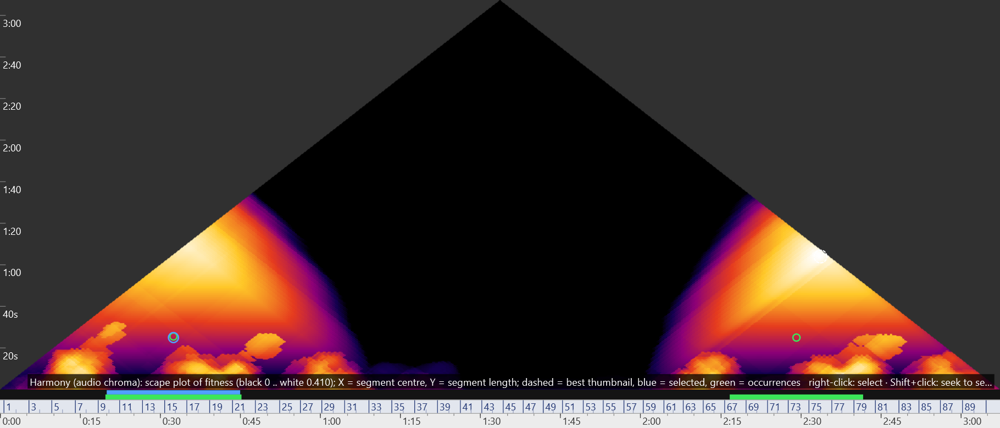
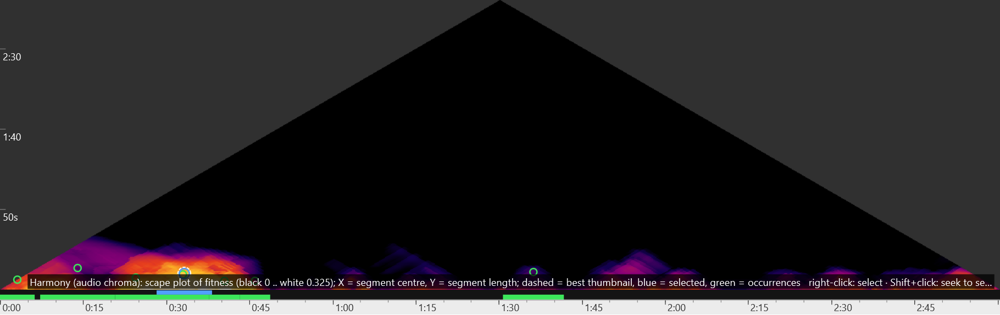
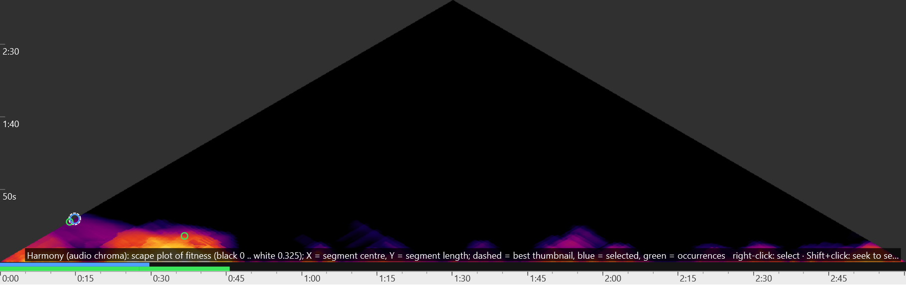

Scape plot and thumbnail
The question: which single section, together with its repeats, best explains the piece?
Every possible section gets one point in a triangle.
The colour says how good a thumbnail that section would be: a section that comes back often, closely, and covers much of the piece.
 1234567
1234567- Three rings on one spot: dashed white is the best thumbnail, blue the selected segment, green an occurrence. At the start all three agree. Middle at about 2:34, height 64 seconds: 2:02 to 3:06.
- A green ring alone: the other occurrence, 0:00 to 1:10.
- Bottom strip, blue over green: the selected segment and its occurrences on the time axis.
- White and yellow region: sections of 40 to 70 seconds around the first section all work well. A broad bright region is a robust find.
- Small bright patches at the bottom: short ideas of 10 to 25 seconds that also repeat.
- Black: sections with no repeat. The whole middle of the piece, and the piece as a whole (the tip), never come back.
- Grey: impossible. No long section can be centred near the edge.
The number called fitness
Fitness is high only when two things are high together (it is their harmonic mean):
- Normalised score: how closely the occurrences match.
- Normalised coverage: how much extra of the piece they cover. The segment itself is subtracted, so a section that never returns gets zero.
In September: the segment lasts 64 seconds, its occurrences together 133.8, the piece 187.4. Extra coverage is (133.8 - 64) / 187.4 = 0.37. The score is 0.455. Their harmonic mean is 0.410.
Try a section of your own
Right-click anywhere in the triangle. The blue ring and the green marks follow; the dashed ring stays where the best one is.

1234- Blue ring: your selection (a green ring inside it: it is its own first occurrence).
- Green ring: where it returns, 2:17 to 2:42.
- Dashed white ring (hard to see on white): still the best thumbnail.
- Strip: your section in blue, its occurrences in green.
The minimum length matters
Short loops repeat easily. So the min length box (default 10 seconds) sets the shortest section that may win. Raise it step by step: a real section survives, a recalled motif does not.


| Piece | 10 s | 20 s | 30 s |
|---|---|---|---|
| September | 0.410 | 0.410 | 0.410 |
| Generated 16 | 0.569 | 0.569 | 0.569 |
| Generated 12 | 0.270 | 0.174 | 0.097 |
The colours do not change with the minimum, only the winner does. That is why, in the second picture, the brightest spot lies below the rings: those sections are shorter than allowed.
| Looks like | What it is | How to read and use it |
|---|---|---|
| Dashed white ring | The best thumbnail at the current minimum length. | |
| Blue ring | The selected segment. It equals the best one until you choose another; the Best button brings it back. | |
| Green rings | The occurrences of the selected segment. | |
| Blue and green bars at the bottom | The same, on the time axis. | |
| Short ticks at the left | Section length. | |
| Colour | Fitness from 0 (black) to the largest in this piece (white; the legend gives the number). Do not compare brightness between pieces; compare the numbers. |